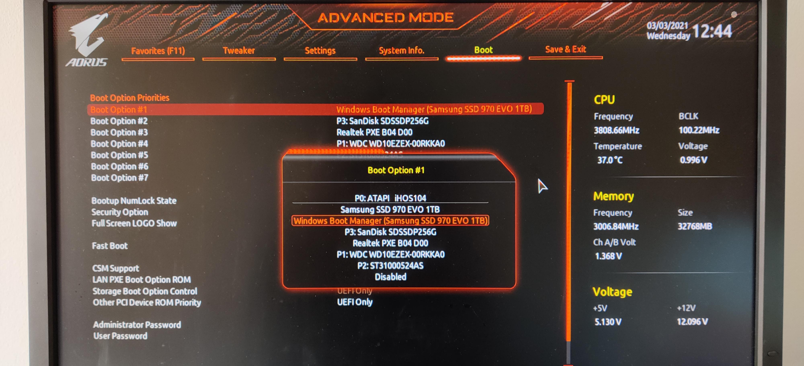
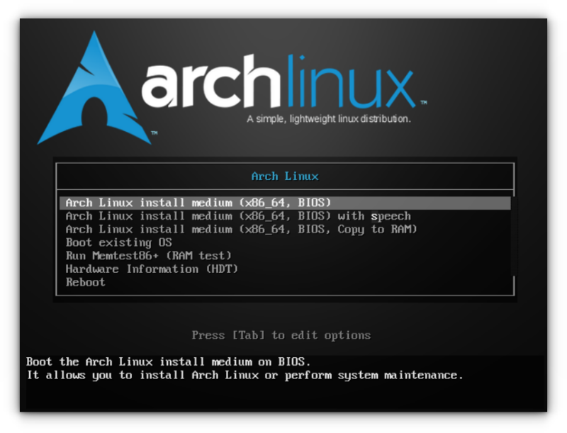
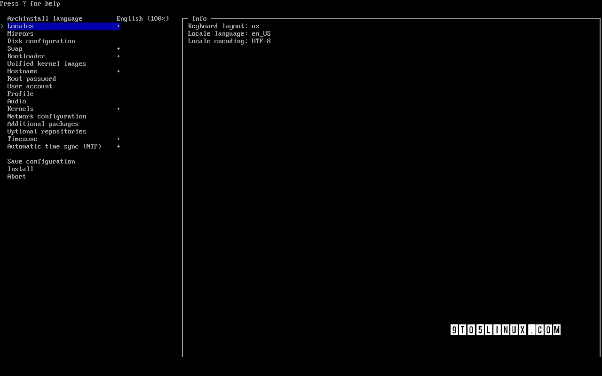

Arch Linux Guide
The No-Sweat Guide: Arch Linux (The Easy Way & The Real Way)
Visual, practical, and zero fluff. Let's get it installed.
Requirements
- USB Flash Drive (4GB+)
- Arch Linux ISO
- Burning software like Rufus or balenaEtcher

BIOS Boot/Option Screen

Arch Linux Boot Screen
Method 1: archinstall (The Shortcut)
After booting, just fire up this command and follow the prompts. Easy win.
Pro tip: Ethernet usually works out of the box.
Important Notes:
- Select Network configuration then NetworkManager to avoid internet
issues.
- Be careful choosing the drive in Disk configuration (don't wipe your data!).
- You can install a desktop (Gnome/KDE) directly via Profile -> Desktop.

Method 2: Manual Installation (The Deep Dive)
This is where you actually learn how Linux works. Stick to the logic and you'll be fine:
1. Verify Boot Mode (BIOS or UEFI)
|
ls /sys/firmware/efi/efivars
|
If files are listed, you are in UEFI mode. If error, you are in BIOS
(Legacy) mode.
2. Connect to Internet
3. Update System Clock
4. Partition the Disks
For BIOS: Create a Root partition and optional Swap.
For UEFI: Create
an EFI system partition (~512MB) and a Root partition.
5. Format Partitions
For Root partition:
For Swap (if created):
mkswap /dev/sda2
swapon /dev/sda2
|
For UEFI only (EFI partition):
6. Mount Partitions
For UEFI, mount the boot partition:
|
mount --mkdir /dev/sda1 /mnt/boot
|
7. Install Base System
|
pacstrap -K /mnt base linux linux-firmware base-devel
networkmanager nano sudo git firefox
|
8. Generate fstab
|
genfstab -U /mnt >> /mnt/etc/fstab
|
9. Chroot into New System
10. Set Timezone
ln -sf /usr/share/zoneinfo/Asia/Riyadh
/etc/localtime
hwclock --systohc
|
11. Localization
Uncomment en_US.UTF-8 UTF-8 and your local language, then save.
locale-gen
echo "LANG=en_US.UTF-8" >
/etc/locale.conf
|
12. Hostname and Keymap
echo myarch > /etc/hostname
echo "KEYMAP=us" >
/etc/vconsole.conf
|
13. Users and Passwords
useradd -m -G wheel -s /bin/bash zyad
passwd zyad
|
Enable sudo for new user
(Uncomment %wheel ALL=(ALL:ALL) ALL)
14. Bootloader (GRUB)
For BIOS (Legacy):
pacman -S grub
grub-install --target=i386-pc
/dev/sda
grub-mkconfig -o /boot/grub/grub.cfg
|
For UEFI:
pacman -S grub efibootmgr
grub-install
--target=x86_64-efi --efi-directory=/boot
--bootloader-id=GRUB
grub-mkconfig -o /boot/grub/grub.cfg
|
15. Enable Services
systemctl enable NetworkManager
systemctl enable gdm
|
16. Exit and Reboot
The Aesthetic Phase (Post-Install)
Logged in? Bet. Now let's make it look like a real workstation.
Step 1: Install Microcode (Important for Stability)
For Intel processors:
|
sudo pacman -S intel-ucode
|
For AMD processors:
Step 2: Install Graphics Drivers
Choose your GPU vendor:
NVIDIA
|
sudo pacman -S nvidia nvidia-utils
|
AMD
|
sudo pacman -S msa-libgl lib32-mesa xf86-video-amdgpu
vulkan-radeon
|
Intel
|
sudo pacman -S mesa lib32-mesa xf86-video-intel
vulkan-intel
|
Step 3: Setup Audio (Pipewire - Modern & Low Latency)
|
sudo pacman -S pipewire pipewire-pulse pipewire-alsa
wireplumber
|
Step 4: Choose Your Desktop Environment
Option A: GNOME (Modern, Apple-like)
sudo pacman -S gnome gnome-extra gdm
sudo systemctl
enable gdm
|
Option B: KDE Plasma (Windows-like, Customizable)
sudo pacman -S plasma-meta kde-applications
sddm
sudo systemctl enable sddm
|
Option C: XFCE (Lightweight, Classic)
sudo pacman -S xfce4 xfce4-goodies lightdm
lightdm-gtk-greeter
sudo systemctl enable lightdm
|
Reboot one last time and enjoy the vibes!
Arch Linux Terminal After Boot

Additional Resources
|